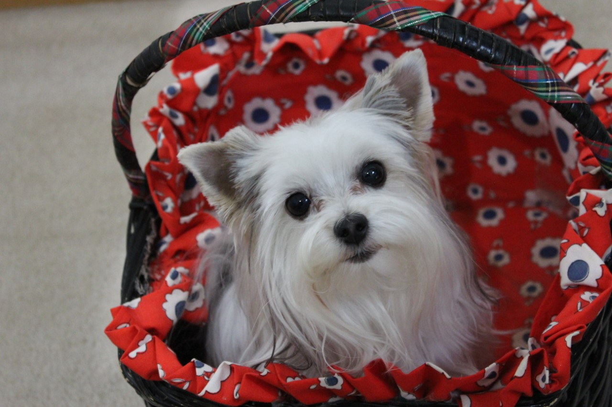

About Us
We are an animal loving family. John has raised show pigeons since he was just a young boy and continues to raise them today. He passed this tradition on to his daughters who also raise and show pigeons. Cheryl has always been a dog lover and started her work with them in obedience training at 11 years old. She continued on with her passion to work as a veterinary assistant for her first job. Then she became a dog groomer over 30 years ago and has had had her own grooming shop for last 15. For 22 years, she raised and bred golden retrievers. This was the breed she fell in love with and was perfect for her family during those years. Now, as she and her husband are getting older, they wanted a family pet that was smaller and more of a lap dog yet had a fun personality. She enjoyed the yorkie breed as a groomer and decided it was a perfect fit for her family now. The feisty spirit of the breed did not disappoint their family as they have all fell in love with the big-dog personality of their little pups. Our animals are first and foremost family pets, but quality is of upmost importance to us. We believe in quality breeding and are dedicated to making sure our pups meet exceptional AKC standards.